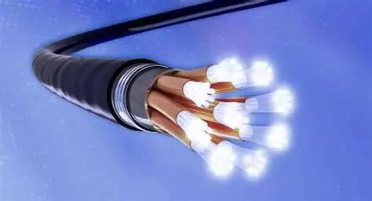
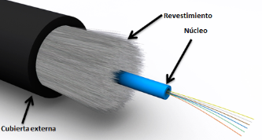
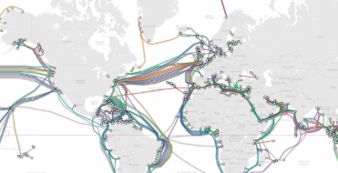

1. Explicación del Concepto: ¿Cómo viaja la información a través de cristales?
A diferencia de los cables de cobre tradicionales que transmiten datos mediante impulsos eléctricos, la Fibra Óptica es una tecnología que utiliza filamentos de vidrio (sílice) o plástico transparentes, tan delgados como un cabello humano, para enviar grandes cantidades de información[cite: 23].
La magia de su funcionamiento radica en un principio físico llamado reflexión interna total[cite: 24]. Los datos se convierten en pulsos digitales de luz (generados por un láser o un LED)[cite: 25]. Al ingresar al núcleo de vidrio, la luz viaja rebotando constantemente en las paredes internas del filamento sin escapar, recorriendo distancias enormes a velocidades sorprendentes (cercanas a la velocidad de la luz en el vidrio, aproximadamente $200,000 \text{ km/s}$)[cite: 26].
Debido a que es luz, es completamente inmune a las interferencias electromagnéticas que suelen afectar a los cables de cobre[cite: 27].


2. Ejemplo Práctico: Aplicaciones y Usos en el Mundo Actual
Hoy en día, la fibra óptica es la columna vertebral de las telecomunicaciones globales[cite: 29]. Sus aplicaciones más importantes se despliegan en tres entornos críticos:
Cables Submarinos Intercontinentales
Enormes cables de fibra óptica cruzan los océanos del mundo para conectar los servidores de diferentes continentes, permitiendo que internet sea global[cite: 30].
Conexiones FTTH (Fiber to the Home)
Es el servicio que llevan las empresas de telecomunicaciones directamente a las casas y oficinas para ofrecer internet de banda ancha de ultra alta velocidad[cite: 31].
Interconexión de Data Centers
Los servidores que almacenan plataformas globales (como YouTube o Netflix) requieren mover terabytes de información por segundo entre ellos, lo cual solo es posible usando enlaces de alta densidad[cite: 32, 33].

Estructura global de los cables intercontinentales submarinos.

Conexiones de fibra de alta densidad interconectando racks de servidores.
3. Reflexión Personal
¿Por qué elegí este tema?
Decidí incluir la fibra óptica porque antes de ver este curso no tenía ni idea de cómo funcionaba realmente[cite: 35]. Me sorprendió por completo descubrir la ingeniería detrás de estos cables y el hecho de que nuestra comunicación digital dependa de hilos de cristal transportando luz[cite: 36]. Es un tema que despertó mucho mi curiosidad científica al romper la idea común de que los datos solo viajan por electricidad o aire[cite: 36, 38].
¿Dónde se aplica y por qué es tan importante profesionalmente?
Se aplica en toda la infraestructura de telecomunicaciones moderna[cite: 39]. Comprender la fibra óptica es vital para cualquier Ingeniero en Sistemas porque el diseño de redes actuales ya no se limita al cobre[cite: 40]. Saber cuándo implementar fibra (por ejemplo, para conectar pisos distantes en un edificio o enlazar racks en un data center) es una competencia clave para asegurar que una empresa tenga una red rápida, escalable y con el menor retraso (latencia) posible[cite: 41].